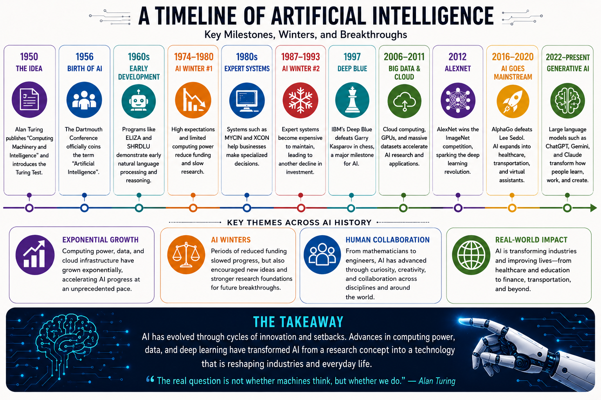

Data engineering, tuned for AI.
I design cloud-based data pipelines and I'm extending that foundation into applied AI — building systems that turn raw data into decisions.
Professional bio
I'm a Data Engineer with experience designing and implementing cloud-based data pipelines using Python, SQL, Snowflake, AWS, Azure, and Spark. My work has centered on building ETL processes, optimizing data workflows, and developing analytics solutions that scale.
I'm currently a graduate student in the AI in Data Analytics program at Indiana Wesleyan University, extending that foundation into machine learning, generative AI, and applied AI systems — with the goal of building intelligent solutions that combine data engineering with AI-driven decision making.
I enjoy solving technical problems, picking up new tools quickly, and building practical AI applications that simplify complex work.
Personal value proposition
I combine strong data engineering fundamentals with practical AI knowledge to design scalable, data-driven solutions that turn raw data into meaningful insight. By integrating cloud technologies, automation, and generative AI, I build efficient systems — and explain them clearly to both technical and non-technical stakeholders.
Data Engineer Interview Coach
Introduction
Built during the AI Lab assignment for my AI in Data Analytics course — applying generative AI to a real problem: helping aspiring Data Engineers prepare for technical interviews.
Description
A custom GPT that acts as a virtual interview assistant: reviewing resumes, generating personalized study plans, running mock interviews, explaining technical concepts, and giving feedback across SQL, Python, Snowflake, AWS, Spark, and behavioral prep.
Objective
Design an AI-powered interview assistant that supports Data Engineering candidates with personalized learning resources, technical interview prep, resume reviews, and mock interviews.
Process — Design Thinking
Understand
Identified common DE interview challenges.
Frame
One AI assistant for coaching + study plans.
Brainstorm
Mapped resume review, drills, mock interviews.
Build
Custom GPT via structured prompt engineering.
Refine
Iterated prompts for accuracy and tone.
What it does
- Resume review
- SQL & Python interview practice
- Snowflake and AWS explanations
- Mock interviews
- Personalized study planning
Value proposition
This artifact demonstrates my ability to apply AI technologies to create a practical solution for interview preparation. It reflects my technical skills, creativity, and focus on designing AI tools that provide meaningful value to users.
Unique value
This project demonstrates:
- AI application development
- User-centered design
- Prompt engineering
- Technical communication
- Problem-solving
Relevance
Target audience:
- Recruiters
- Hiring Managers
- Data Engineering Students
- AI Enthusiasts
This artifact illustrates how AI can improve technical interview preparation while showcasing my ability to build useful AI-powered solutions.
References
- AI Lab Documentation
- ChatGPT Custom GPT & Claude (Anthropic, 2026) — used to assist with planning, testing strategy, and documentation structure for this project.
The Evolution of Artificial Intelligence and Machine Learning
Introduction
Artificial Intelligence has evolved over several decades through continuous innovation in computer science, mathematics, and machine learning. Understanding this historical progression provides valuable insight into how modern AI technologies, including Generative AI, have emerged and continue to transform industries.
Description
This artifact presents a historical timeline of major milestones in Artificial Intelligence, beginning with Alan Turing's foundational work in 1950 and continuing through modern advances in deep learning and Generative AI. The timeline highlights significant technological breakthroughs, periods of reduced investment known as AI Winters, and recent innovations that have accelerated AI adoption across industries.
Objective
The objective of this project was to research, organize, and communicate the historical development of Artificial Intelligence in a way that demonstrates both technical understanding and effective communication skills.
Process
To develop this artifact, I:
- Researched the history of Artificial Intelligence.
- Identified major milestones and technological breakthroughs.
- Studied periods of rapid innovation and AI Winters.
- Organized historical events into a logical timeline.
- Reviewed scholarly and industry references to verify historical accuracy.
- Revised the content for a professional audience.
Key milestones
A visual timeline of AI's development from 1950 to today:

Tools & technologies used
Value proposition
Understanding the evolution of AI provides important context for modern AI development. This artifact demonstrates my ability to research technical topics, communicate complex concepts clearly, and connect historical innovation with current AI technologies.
Unique value
This artifact demonstrates:
- Technical research
- Historical analysis
- Written communication
- Information synthesis
- AI domain knowledge
Relevance
Intended audience:
- Recruiters
- Hiring Managers
- AI Professionals
- Students
This artifact demonstrates my understanding of the foundations of Artificial Intelligence, which is valuable when designing modern AI solutions and understanding future technological trends.
Lessons learned
During this project, I gained a greater appreciation for how decades of research contributed to today's AI systems. I also learned that AI progress has not been linear; periods of rapid advancement were followed by AI Winters that ultimately led researchers to develop more robust methods and technologies. Understanding this history helps me better evaluate current AI trends and future innovations.
References
- Our World in Data
- IEEE Computer Society
- Additional sources cited in the original timeline coursework document
Machine Learning vs. Deep Learning: Real-World Applications
Introduction
Machine learning and deep learning are both foundational branches of artificial intelligence, but they are built to solve different kinds of problems. Understanding when to apply each is a core skill for anyone designing AI-driven systems.
Description
This artifact is a comparative analysis written for my AI in Data Analytics coursework, examining how machine learning and deep learning differ in practice through two real-world applications: email spam detection and medical image analysis. It walks through why each approach fits its respective problem and where the other would fall short.
Objective
Analyze and communicate the practical differences between machine learning and deep learning by evaluating real-world use cases, demonstrating the judgment needed to choose the right approach for a given problem.
Process
- Reviewed core concepts distinguishing machine learning from deep learning.
- Selected two contrasting real-world applications to illustrate the comparison.
- Analyzed why each approach is suited (or unsuited) to its example.
- Drew a conclusion on how problem type should guide method selection.
- Cited credible industry references (Google, IBM) to support the analysis.
Key comparison
Two contrasting real-world examples anchor the analysis:
Email spam detection
Structured signals — sender, keywords, links, user behavior — make this a strong fit for ML: fast, efficient, and accurate without heavy compute.
Medical image analysis
Detecting disease in X-rays, CT, and MRI scans involves too many fine-grained details to hand-engineer. CNNs learn patterns directly from the images, often outperforming traditional methods.
Conclusion: neither approach is universally better — machine learning wins on structured, well-understood problems, while deep learning wins where patterns are too complex to define by hand. Knowing which to reach for is the real skill.
Tools & technologies used
Value proposition
This artifact shows that I understand AI at a conceptual level, not just an implementation level — the ability to reason about which technique fits a problem is what separates effective AI practitioners from those who default to a single tool for everything.
Unique value
This artifact demonstrates:
- Conceptual understanding of ML vs. DL
- Comparative analysis
- Real-world application reasoning
- Clear technical writing
- Evidence-based conclusions
Relevance
Intended audience:
- Recruiters
- Hiring Managers
- AI/ML Professionals
- Students
Choosing the right technique for a problem is a foundational decision in any AI or data engineering role — this artifact shows I can make and explain that judgment call clearly.
References
- Google. (n.d.). Gmail spam protection.
- IBM. (n.d.). Machine learning.
- IBM. (n.d.). Deep learning.